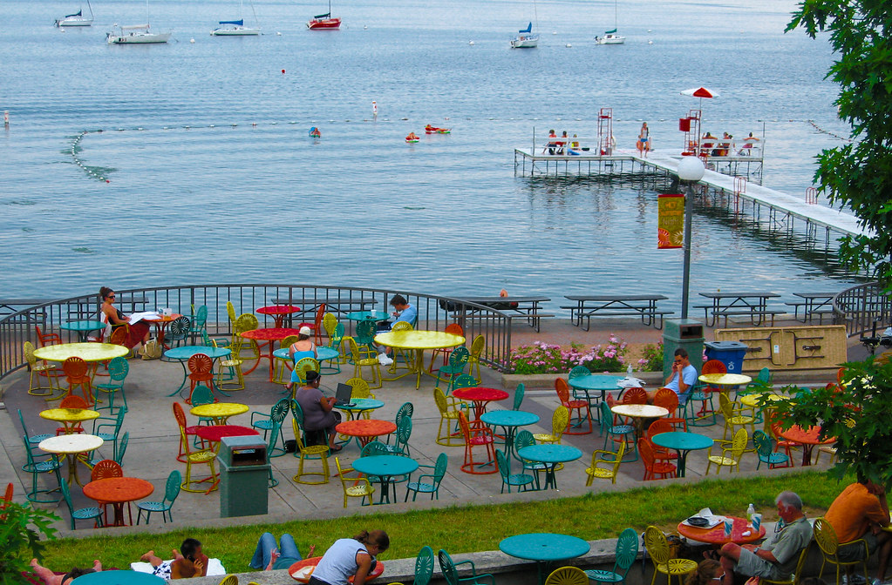

Simran Gandhi's Education
Education
- Simran Gandhi was a member of the O'Neil National Honors Society comprised of students earning the top 15% of the school's GPAs.
- Simran was part of many clubs such as being the photograpy editor for West's award-winning newspaper, Network Club aimed at spending quality time with children with special needs and the Varsity Wrestling manager.
High School
Oshkosh West High School
2015-2019
- Pursuing a Psychology degree along with Certificates in both Digital Studies and Design Strategy
- Simran is embracing being a Madison student by interning for the CAFE Lab in SoHE, being promoted to Section Editor within HerCampus, and joining both AdClub and Ad Agency to explore possible career paths in Advertising or Communications.
College
University of Wisconsin-Madison
2019-Present
After college, Simran hopes to settle down in a job fitting her passion and get the opportunity to travel abroad for her job before tackling grad school.
________________________________________________________________________________________________________________________

University of Wisconsin Union Terrace
{kind=link}